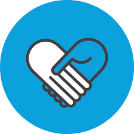

EMPLOYMENT
Self Employed
December 2016 - Present
Graphic Designer
- Designed and established client design process with deliverables.
- Produced wireframes, mockups and task flows, prototypes, and design specifications.
- Develop brand and multichannel marketing concepts with clients.
- Designed logotypes/word-marks and print materials for local businesses to improve market presence.
Golden Touch Assisted Living Home
2016-PRESENT
Assistant Manager
- Oversee management and performance of Assisted Living Facility.
- Prepare, record, and proof read correspondence, invoices, and reports.
- Maintained and organized facility scheduling of staff.
- Review and revise standards, guidelines, and facility forms.
- Admission processing including recruiting of perspective residents; assessments and admission forms
- Ensured proper facility compliance and adherence to federal and state regulations on resident care.
EDUCATION
Bachelors of Science in Computer Information Systems
GPA 3.45 June 2017
W.P. Carey School of Business - Arizona State University
Tempe, AZ. U.S.A
Associate of Arts in Business
GPA 3.25 May 2014
Chandler-Giblert Community College
Chandler, AZ. U.S.A
Associate of Arts in Information Technology
GPA 3.35 May 2010
University of Phoenix, Phoenix, AZ
Tempe, AZ. U.S.A
LEADERSHIP EXPERIENCE
Inition Education Solution
March 2016 - Present
VP of IT / Designer
- Proposed and developed an education solution by selecting components for a computer package.
- Developed learning curriculum for 4th -6th graders. Taught coding concepts through activities
- Help create brand identity, logotype, and designed website
- Technical advisor in refurbishing laptop computers.
Hands Enriching Life Projects
June 2013 - May 2014
Officer of Web Design
- Create promotional graphics and advertisements.
- Improved marketing strategy and public relations by designing consistent branding image
- Organized and created marketing materials for donation drives

VOLUNTEER EXPERIENCE
Upon This Rock Christian Church
June 2012 - December 2016
Worship Leader
- managed dynamics of musicians and prepared weekly songs.
- Played guitar, bass, and keyboard.
Hands Enriching Life Projects
June 2012- May 2014
Assistant Manager
- Involved in helping build homes for two construction projects with Habitat for Humanity
- Invovled in repainting projects with Chandler Christian Community Center.